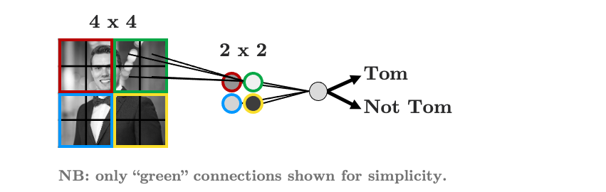
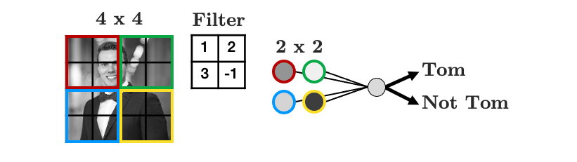
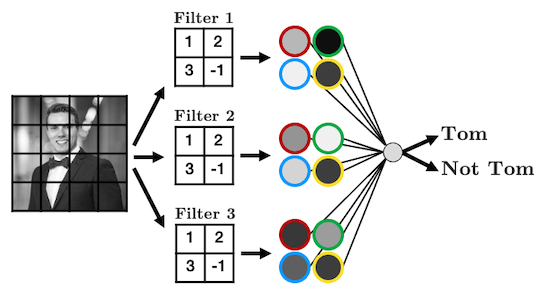
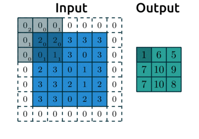
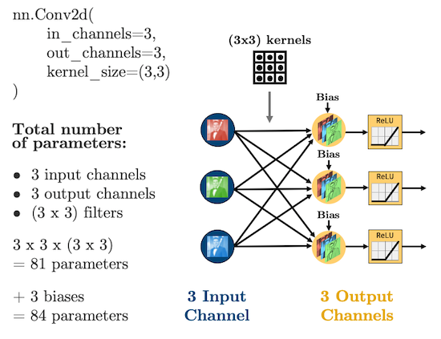

Introduction to Convolutional Neural Networks#
Mahmood Amintoosi, Spring 2024
Computer Science Dept, Ferdowsi University of Mashhad
I should mention that the original material was from Tomas Beuzen’s course.
Lecture Outline#
Lecture Learning Objectives#
Describe the terms convolution, kernel/filter, pooling, and flattening
Explain how convolutional neural networks (CNNs) work
Calculate the number of parameters in a given CNN architecture
Create a CNN in
PyTorchDiscuss the key differences between CNNs and fully connected NNs
Imports#
# Auto-setup when running on Google Colab
import os
if 'google.colab' in str(get_ipython()) and not os.path.exists('/content/neural-networks'):
!git clone -q https://github.com/fum-cs/neural-networks.git /content/neural-networks
!pip --quiet install -r /content/neural-networks/requirements_colab.txt
%cd neural-networks/notebooks
import warnings
warnings.filterwarnings('ignore')
import numpy as np
import pandas as pd
import torch
from torchsummary import summary
import matplotlib.pyplot as plt
from utils.plotting import *
plt.style.use('ggplot')
plt.rcParams.update({'font.size': 16, 'axes.labelweight': 'bold', 'axes.grid': False})
import plotly.io as pio
pio.renderers.default = 'notebook'
1. Convolutional Neural Networks (CNNs)#
1.1. Motivation#
Up until now we’ve been dealing with “fully connected neural networks” meaning that every neuron in a given layer is connected to every neuron in the next layer. This has two key implications:
It results in a LOT of parameters.
The order of our features doesn’t matter.
Consider the simple image and fully connected network below:

Every input node is connected to every node in the next layer - is that really necessary?
When you look at this image, how do you know that it’s Tom?
You notice the structure in the image (there’s a face, shoulders, a smile, etc.)
You notice how different structures are positioned and related (the face is on top of the shoulders, etc.)
You probably use the shading (colour) to infer things about the image too but we’ll talk more about that later.
The point here is that the structure of our data (the pixels) is important
So maybe, we should have each hidden node only look at a small area of the image, like this:
We have far fewer parameters now because we’re acknowledging that pixels that are far apart are probably not all that related and so don’t need to be connected.
We’re seeing that structure is important here, so then why should I need to flatten my image?
Let’s be crazy and not flatten the image, but instead, make our hidden layer a 2D matrix:

We’re almost there!
As it stands, each group of 2 x 2 pixels has 4 unique weights associated with it (one for each pixel), which are being summed up into a single value in the hidden layer.
But we don’t need to weights to be different for each group, we’re looking for structure, we don’t care if my face is in the top left or the bottom right, we’re just looking for a face!
Let’s summarise the weights into a weight “filter”

Let’s see how the filter works
We’ll display some arbitrary values for our pixels
The filter “convolves” over each group of pixels, multiplies corresponding elements and sums them up to give the values in the output nodes:
As we’ll see, we can add as many of these “filters” as we like to make more complex models that can identify more useful things:

We just made a convolutional neural network (CNN)
Instead of fully-connected hidden nodes, we have 2D filters that we “convolve” over our input data
This has two key advantages:
We have less parameters than a fully connected network.
We preserve the useful structure of our data.
We have weight sharing
1.2. Convolutions and Filters#
Convolution really just means “to pass over the data”
What are we “passing”? Our filters - which are also called kernels
Here’s another gif like the one we saw earlier:

Source: modified after theano-pymc.readthedocs.io.
So how does this help us extract structure from the data?
Well let’s see some examples!
image = torch.from_numpy(plt.imread("img/tom_bw.png"))
plt.imshow(image, cmap='gray')
plt.axis('off');

We can blur this image by applying a filter with the following weights:
kernel = torch.tensor([[[[ 0.0625, 0.1250, 0.0625],
[ 0.1250, 0.2500, 0.1250],
[ 0.0625, 0.1250, 0.0625]]]])
plot_conv(image, kernel)
How about this one:
kernel = torch.tensor([[[[ -2, -1, 0],
[ -1, 1, 1],
[ 0, 1, 2]]]])
plot_conv(image, kernel)
One more:
kernel = torch.tensor([[[[ -1, -1, -1],
[ -1, 8, -1],
[ -1, -1, -1]]]])
plot_conv(image, kernel)
Here’s a great website where you can play around with other filters.
We usually use odd numbers for filters so that they are applied symmetrically around our input data
Did you notice in the .gif earlier that the output from applying our kernel was smaller than the input? Take a look again:
Source: modified after theano-pymc.readthedocs.io.
Be default, our kernels are only applied where the filter fully fits on top of the input
But we can control this behaviour and the size of our output with:
padding: “pads” the outside of the input 0’s to allow the kernel to reach the boundary pixelsstrides: controls how far the kernel “steps” over pixels.
Below is an example with:
padding=1: we have1layer of 0’s around our borderstrides=(2,2): our kernel moves 2 data points to the right for each row, then moves 2 data points down to the next row

Source: modified after theano-pymc.readthedocs.io.
We’ll look more at these below.
2. Cooking up a CNN#
2.1. Ingredient 1: Convolutional Layers#
I showed some example kernels above
In CNNs the actual values in the kernels are the weights your network will learn during training: your network will learn what structures are important for prediction
In PyTorch, convolutional layers are defined as
torch.nn.Conv2d, there are 5 important arguments we need to know:in_channels: how many features are we passing in. Our features are our colour bands, in greyscale, we have 1 feature, in colour, we have 3 channels.out_channels: how many kernels do we want to use. Analogous to the number of hidden nodes in a hidden layer of a fully connected network.kernel_size: the size of the kernel. Above we were using 3x3. Common sizes are 3x3, 5x5, 7x7.stride: the “step-size” of the kernel.padding: the number of pixels we should pad to the outside of the image so we can get edge pixels.
# 1 kernel of (3,3)
conv_layer = torch.nn.Conv2d(1, 1, kernel_size=(5, 5))
plot_convs(image, conv_layer)
print(conv_layer.weight.shape)
print(conv_layer.weight)
torch.Size([1, 1, 5, 5])
Parameter containing:
tensor([[[[ 0.0111, 0.1380, 0.0287, -0.1262, 0.1479],
[ 0.1983, 0.0319, -0.0308, 0.0119, 0.1184],
[-0.0969, -0.0456, -0.1575, -0.0455, 0.1506],
[-0.1951, -0.0650, 0.0334, -0.1355, -0.1566],
[ 0.0968, -0.0658, -0.0670, 0.0308, -0.1359]]]], requires_grad=True)
# 2 kernels of (3,3)
conv_layer = torch.nn.Conv2d(1, 2, kernel_size=(3, 3))
plot_convs(image, conv_layer)
# 3 kernels of (5,5)
conv_layer = torch.nn.Conv2d(1, 3, kernel_size=(5, 5))
plot_convs(image, conv_layer)
If we use a kernel with no padding, our output image will be smaller as we noted earlier
Let’s demonstrate that by using a larger kernel now by applying a Gaussian filter
import torch
import math
def gaussian_kernel2d(ksize, sigma):
"""
Creates a 2D Gaussian kernel.
Args:
ksize: Kernel size (integer, kernel will be ksize x ksize).
sigma: Standard deviation of the Gaussian distribution.
Returns:
A PyTorch tensor representing the 2D Gaussian kernel.
"""
center = ksize // 2
x, y = torch.meshgrid(torch.arange(ksize), torch.arange(ksize))
gaussian = torch.exp(-((x - center)**2 + (y - center)**2) / (2 * sigma**2))
return gaussian / gaussian.sum()
# usage:
ksize = 5
sigma = 1.0
kernel = gaussian_kernel2d(ksize, sigma)
print(kernel)
tensor([[0.0030, 0.0133, 0.0219, 0.0133, 0.0030],
[0.0133, 0.0596, 0.0983, 0.0596, 0.0133],
[0.0219, 0.0983, 0.1621, 0.0983, 0.0219],
[0.0133, 0.0596, 0.0983, 0.0596, 0.0133],
[0.0030, 0.0133, 0.0219, 0.0133, 0.0030]])
conv_layer = torch.nn.Conv2d(1, 1, kernel_size=(ksize, ksize))
# Initialize the convolutional layer's weights with the Gaussian kernel
with torch.no_grad():
conv_layer.weight.copy_(kernel.unsqueeze(0).unsqueeze(0)) # Add extra dimensions for channels and output channels
# Set the bias to zero (optional, but often a good practice for Gaussian blurring)
conv_layer.bias.zero_()
# Verify the weights are correctly set:
print(conv_layer.weight)
plot_convs(image, conv_layer, axis=True)
Parameter containing:
tensor([[[[0.0030, 0.0133, 0.0219, 0.0133, 0.0030],
[0.0133, 0.0596, 0.0983, 0.0596, 0.0133],
[0.0219, 0.0983, 0.1621, 0.0983, 0.0219],
[0.0133, 0.0596, 0.0983, 0.0596, 0.0133],
[0.0030, 0.0133, 0.0219, 0.0133, 0.0030]]]], requires_grad=True)
# 1 kernel of (51,51)
ksize = 51
sigma = 1.0
kernel = gaussian_kernel2d(ksize, sigma)
conv_layer = torch.nn.Conv2d(1, 1, kernel_size=(ksize, ksize))
with torch.no_grad():
conv_layer.weight.copy_(kernel.unsqueeze(0).unsqueeze(0)) # Add extra dimensions for channels and output channels
conv_layer.bias.zero_()
plot_convs(image, conv_layer, axis=True)
As we saw, we can add
paddingto the outside of the image to avoid this:
# 1 kernel of (51,51) with padding
conv_layer = torch.nn.Conv2d(1, 1, kernel_size=(ksize, ksize), padding=25)
with torch.no_grad():
conv_layer.weight.copy_(kernel.unsqueeze(0).unsqueeze(0)) # Add extra dimensions for channels and output channels
conv_layer.bias.zero_()
plot_convs(image, conv_layer, axis=True)
Setting
padding = kernel_size // 2will always result in an output the same shape as the input. Think about why this is…
Finally, we also saw before how
stridesinfluence the size of the output:
# 1 kernel of (51,51) with stride of 3
conv_layer = torch.nn.Conv2d(1, 1, kernel_size=(ksize, ksize), stride=3)
with torch.no_grad():
conv_layer.weight.copy_(kernel.unsqueeze(0).unsqueeze(0)) # Add extra dimensions for channels and output channels
conv_layer.bias.zero_()
plot_convs(image, conv_layer, axis=True)
With CNN we are no longer flattening our data, so what are our “features”?
Our features are called “channels” in CNN-lingo -> they are like the colour channels in an image:
A grayscale image has 1 feature/channel
A coloured image has 3 features/channel


What’s important with CNNs is that the size of our input data does not impact how many parameters we have in our convolutonal layers.
For example, your kernels don’t care how big your image is (i.e., 28 x 28 or 256 x 256), all that matters is:
How many features (“channels”) you have:
in_channelsHow many filters you use in each layer:
out_channelsHow big the filters are:
kernel_size
Let’s see some diagrams:

For coloured images (3 channels):

2.2. Ingredient 2: Flattening#
With our brand new, shiny convolutional layers, we’re basically just passing images through the network - cool!
But we’re going to eventually want to do some regression or classification
That means that by the end of our network, we are going to need to
torch.nn.Flatten()our images:

Let’s make that simple CNN above in PyTorch:
class CNN(torch.nn.Module):
def __init__(self):
super().__init__()
self.main = torch.nn.Sequential(
torch.nn.Conv2d(in_channels=1, out_channels=3, kernel_size=(3, 3), padding=1),
torch.nn.ReLU(),
torch.nn.Conv2d(in_channels=3, out_channels=2, kernel_size=(3, 3), padding=1),
torch.nn.ReLU(),
torch.nn.Flatten(),
torch.nn.Linear(20000, 1)
)
def forward(self, x):
out = self.main(x)
return out
model = CNN()
summary(model, (1, 100, 100))
----------------------------------------------------------------
Layer (type) Output Shape Param #
================================================================
Conv2d-1 [-1, 3, 100, 100] 30
ReLU-2 [-1, 3, 100, 100] 0
Conv2d-3 [-1, 2, 100, 100] 56
ReLU-4 [-1, 2, 100, 100] 0
Flatten-5 [-1, 20000] 0
Linear-6 [-1, 1] 20,001
================================================================
Total params: 20,087
Trainable params: 20,087
Non-trainable params: 0
----------------------------------------------------------------
Input size (MB): 0.04
Forward/backward pass size (MB): 0.92
Params size (MB): 0.08
Estimated Total Size (MB): 1.03
----------------------------------------------------------------
Oh man! 20,000 parameters in that last layer, geez
Is there a way we can reduce this somehow? Glad you asked! See you in the next section.
2.3. Ingredient 3: Pooling#
Pooling is how we can reduce the number of parameters we get out of a
torch.nn.Flatten()It’s pretty simple, we just aggregate the data, usually using the maximum or minimum of a window of pixels
Here’s an example of max pooling:

Source: modified after www.oreilly.com/.
We use “pooling layers” to reduce the shape of our image as it’s passing through the network
So when we eventually
torch.nn.Flatten(), we’ll have less features in that flattened layer!We can implement pooling with
torch.nn.MaxPool2d()Let’s try it out and reduce the number of parameters:
class CNN(torch.nn.Module):
def __init__(self):
super().__init__()
self.main = torch.nn.Sequential(
torch.nn.Conv2d(in_channels=1, out_channels=3, kernel_size=(3, 3), padding=1),
torch.nn.ReLU(),
torch.nn.MaxPool2d((2, 2)),
torch.nn.Conv2d(in_channels=3, out_channels=2, kernel_size=(3, 3), padding=1),
torch.nn.ReLU(),
torch.nn.MaxPool2d((2, 2)),
torch.nn.Flatten(),
torch.nn.Linear(1250, 1)
)
def forward(self, x):
out = self.main(x)
return out
model = CNN()
summary(model, (1, 100, 100));
----------------------------------------------------------------
Layer (type) Output Shape Param #
================================================================
Conv2d-1 [-1, 3, 100, 100] 30
ReLU-2 [-1, 3, 100, 100] 0
MaxPool2d-3 [-1, 3, 50, 50] 0
Conv2d-4 [-1, 2, 50, 50] 56
ReLU-5 [-1, 2, 50, 50] 0
MaxPool2d-6 [-1, 2, 25, 25] 0
Flatten-7 [-1, 1250] 0
Linear-8 [-1, 1] 1,251
================================================================
Total params: 1,337
Trainable params: 1,337
Non-trainable params: 0
----------------------------------------------------------------
Input size (MB): 0.04
Forward/backward pass size (MB): 0.61
Params size (MB): 0.01
Estimated Total Size (MB): 0.65
----------------------------------------------------------------
Damnnnnn - we reduced that last layer to 1,251 parameters. Nice job!
3. The CNN Recipe Book#
Here’s a CNN diagram of a famous architecture called AlexNet (we’ll talk more about “famous architectures” next lecture):

You actually know what all of the above means now!
But, deep learning and CNN architecture remains very much an art
Here is my general recipe book (based on experience, common practice, and popular pre-made architectures - more on those next lecture)
Typical ingredients (in order):
Convolution layer(s):
torch.nn.Conv2dActivation function:
torch.nn.ReLU,torch.nn.Sigmoid,torch.nn.Softplus, etc.(optional) Batch normalization:
torch.nn.BatchNorm2d(more on that next lecture)(optional) Pooling:
torch.nn.MaxPool2d(optional) Drop out:
torch.nn.DropoutFlatten:
torch.nn.Flatten
I’ll be getting you to implement a CNN for our Bitmoji dataset from last lecture in lab this week so you can get some practice in there!
4. CNN vs Fully Connected NN#
As an example of the parameter savings introduced when using CNNs with structured data, let’s compare the Bitmoji classifier from last lecture, with an equivalent CNN version
We’ll replace all linear layers with convolutional layers with 3 kernels of size (3, 3) and will assume an image size of 128 x 128:
def linear_block(input_size, output_size):
return torch.nn.Sequential(
torch.nn.Linear(input_size, output_size),
torch.nn.ReLU()
)
def conv_block(input_channels, output_channels):
return torch.nn.Sequential(
torch.nn.Conv2d(input_channels, output_channels, (3, 3), padding=1),
torch.nn.ReLU()
)
class NN(torch.nn.Module):
def __init__(self, input_size):
super().__init__()
self.main = torch.nn.Sequential(
linear_block(input_size, 256),
linear_block(256, 128),
linear_block(128, 64),
linear_block(64, 16),
torch.nn.Linear(16, 1)
)
def forward(self, x):
out = self.main(x)
return out
class CNN(torch.nn.Module):
def __init__(self, input_channels):
super().__init__()
self.main = torch.nn.Sequential(
conv_block(input_channels, 3),
conv_block(3, 3),
conv_block(3, 3),
conv_block(3, 3),
conv_block(3, 3),
torch.nn.Flatten(),
torch.nn.Linear(49152, 1)
)
def forward(self, x):
out = self.main(x)
return out
model = NN(input_size=128 * 128)
summary(model, (128 * 128,))
----------------------------------------------------------------
Layer (type) Output Shape Param #
================================================================
Linear-1 [-1, 256] 4,194,560
ReLU-2 [-1, 256] 0
Linear-3 [-1, 128] 32,896
ReLU-4 [-1, 128] 0
Linear-5 [-1, 64] 8,256
ReLU-6 [-1, 64] 0
Linear-7 [-1, 16] 1,040
ReLU-8 [-1, 16] 0
Linear-9 [-1, 1] 17
================================================================
Total params: 4,236,769
Trainable params: 4,236,769
Non-trainable params: 0
----------------------------------------------------------------
Input size (MB): 0.06
Forward/backward pass size (MB): 0.01
Params size (MB): 16.16
Estimated Total Size (MB): 16.23
----------------------------------------------------------------
model = CNN(input_channels=1)
summary(model, (1, 128, 128))
----------------------------------------------------------------
Layer (type) Output Shape Param #
================================================================
Conv2d-1 [-1, 3, 128, 128] 30
ReLU-2 [-1, 3, 128, 128] 0
Conv2d-3 [-1, 3, 128, 128] 84
ReLU-4 [-1, 3, 128, 128] 0
Conv2d-5 [-1, 3, 128, 128] 84
ReLU-6 [-1, 3, 128, 128] 0
Conv2d-7 [-1, 3, 128, 128] 84
ReLU-8 [-1, 3, 128, 128] 0
Conv2d-9 [-1, 3, 128, 128] 84
ReLU-10 [-1, 3, 128, 128] 0
Flatten-11 [-1, 49152] 0
Linear-12 [-1, 1] 49,153
================================================================
Total params: 49,519
Trainable params: 49,519
Non-trainable params: 0
----------------------------------------------------------------
Input size (MB): 0.06
Forward/backward pass size (MB): 4.13
Params size (MB): 0.19
Estimated Total Size (MB): 4.38
----------------------------------------------------------------
No pooling and our CNN has 49,519 parameters vs 4,236,769
This is a somewhat arbitray comparison but it proves my point
We’ll explore how accurate our CNN is in the lab this week
5. Lecture Exercise: True/False Questions#
Answer True/False for the following:
The input to a
torch.nn.Conv2Dlayer is a 2D image. (False - it’s a 3D image, don’t forget the channels!)The output of a
torch.nn.Conv2Dlayer is a 2D image. (False - it’s a 3D image, don’t forget the channels!)The parameters of a
torch.nn.Conv2Dlayer form a 4D array. (True)Adding more fully connected layers (after flattening) always increases the number of parameters of a convnet. (True)
Adding more convolutional layers (before flattening) always increases the number of parameters of a convnet. (False - for example, we could increase the
stridein a convolutional layer to reduce the size of our data before the flatten layer. Although it’s more common to do this with a pooling layer.)
6. The Lecture in Three Conjectures#
CNNs help us utilize the structure in our data to make predictions. They also typically have less parameters than fully connected networks.
CNNs use filters/kernels which “convolve” over localized areas of the data.
The core ingredients of CNNs are: convolutional layers, pooling layers, flattening layers